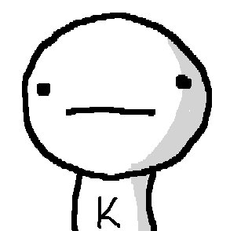

ЕВРОПЕЙСКИ ФОРМАТ НА АВТОБИОГРАФИЯ |
 | ||||||||
|---|---|---|---|---|---|---|---|---|---|
| ЛИЧНА ИНФОРМАЦИЯ | |||||||||
| Име | КАЛОЯН ИЛИЯНОВ ВЕЛИЧКОВ | ||||||||
| Местоживеене | ПЛОВДИВ/БЪЛГАРИЯ | ||||||||
| Телефон | +359 89 465 5690 | ||||||||
| kaloyan.velichkov@abv.bg | |||||||||
| Националност | България | ||||||||
| Дата на раждане | 26.01.1997 | ||||||||
| ОБРАЗОВАНИЕ И ОБУЧЕНИЕ | |||||||||
| Дати | Октомври 2015 - до момента | ||||||||
| Наименование на придобитата квалификация | Информатика | ||||||||
| Име и вид на обучаващата или образователната организация | ПУ „Паисий Хилендарски“ – гр. Пловдив | ||||||||
| Ниво по националната класификация | Бакалавър | ||||||||
| Дати | Септември 2011 – Юни 2015 | ||||||||
| Наименование на придобитата квалификация | Математика и информатика | ||||||||
| Име и вид на обучаващата или образователната организация | ПГ „Найден Геров“ – гр. Лом | ||||||||
| Ниво по националната класификация | Средно училище | ||||||||
| Допълнителни курсове | Първо място на "Шесто национално състезание по информационни технологии - Благоевград 2014", категория "Уеб Сайт" - IX - XII клас | ||||||||
| ЛИЧНИ УМЕНИЯ И КОМПЕТЕНЦИИ | |||||||||
| MАЙЧИН ЕЗИК | Български | ||||||||
| ДРУГИ ЕЗИЦИ |
|
||||||||
| КОМПЮТЪРНИ УМЕНИЯ И КОМПЕТЕНЦИИ |
|
||||||||
| СВИДЕТЕЛСТВО ЗА УПРАВЛЕНИЕ НА МПС | Категория B | ||||||||
| ДОПЪЛНИТЕЛНА ИНФОРМАЦИЯ | Мои проекти и проекти, в които съм участвал: http://za.po-dobro.utre.gymnasium-lom.com/ http://cpp.gymnasium-lom.com/ http://kayavision.com/ |